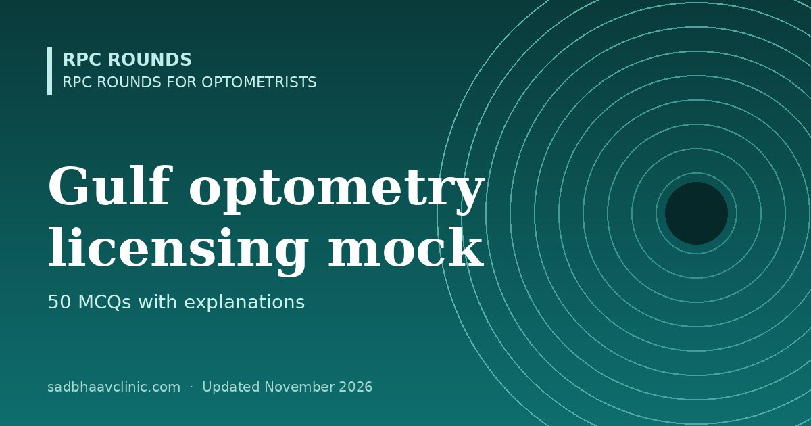

Last updated: November 2026
A 50-question practice test for optometrists preparing for licensing exams in the UAE, Saudi Arabia, Qatar, Oman, Kuwait and Bahrain.
These are original practice questions written for revision; they are not questions from any health authority. Each authority sets its own number of questions, time and pass mark. For eligibility and exam steps, see optometry exams abroad.
List the topics you got wrong, open each linked page, and retake the test after a week. Try the other optometry mocks: B.Optom, NBEO-style, OCANZ-style and Gulf licensing.
More free mocks: all mock tests.
📘 Want more exam-ready material? See Most Commons in Ophthalmology on Kindle, or browse all my books.
Looking for an eye specialist in Ahmedabad? Learn about our Eye Department or book a consultation with Dr. Dhaval Patel.